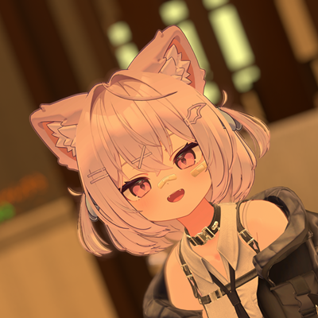

About Me
名前：らい生誕：2003年5月30日 (21歳)
趣味：C++ Programming、SNSの巡回、VRChat
興味：IT分野、国際情勢、ﾈｺﾁｬﾝ
学習：コンピューターサイエンス、ウクライナ語
Activities
2019年よりC++や静的/動的解析、その他関連技術を独学で学びFPSゲームのチートの作成・販売等を行っていました。今ではVRChatで静かに暮らしています。そっとしておいてください。気になったら聞いてもらっても大丈夫です。
Social